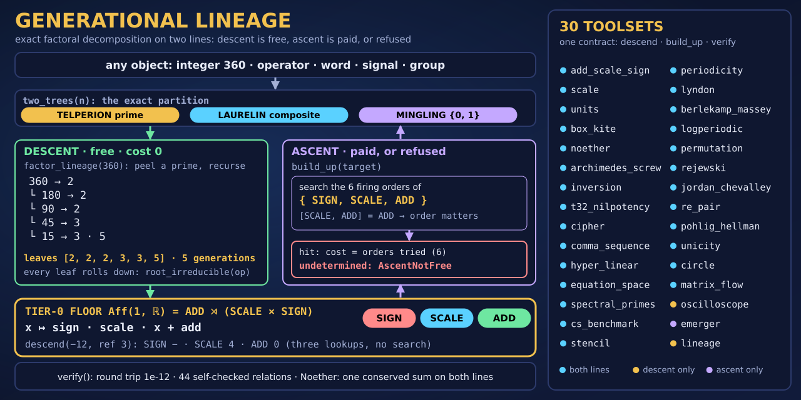
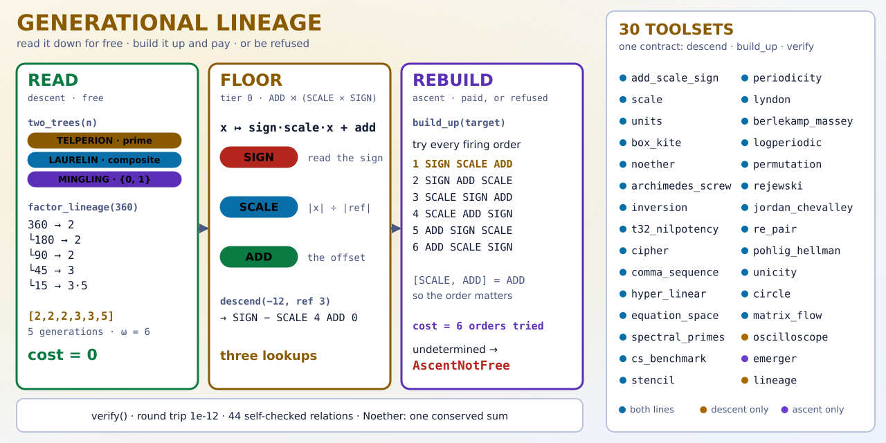
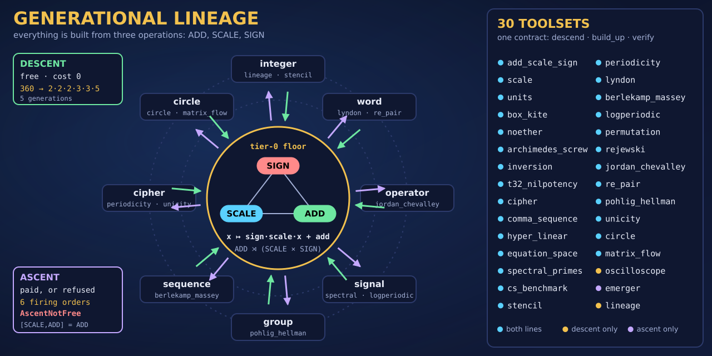

Each is an SVG, 1280 × 640 (the GitHub social-preview ratio): the Add:Scale:Sign flow on the left two-thirds, the 30 toolsets on the right third. The flow is drawn from the code's own output (factor_lineage(360), descend(−12, ref 3), the 6 firing orders). Tell me which image number, and what to change.
Image 1 Vertical flow: two lanes, descent (green) and ascent (violet), meeting at the tier-0 floor. Dark, in the Gemini house style.

Image 2 Horizontal pipeline: READ, FLOOR, REBUILD; the six firing orders listed out. Light, for a white README.

Image 3 Radial: eight kinds of object fall in to the three operations (green), and build_up goes out (violet). Dark.

Image 4 How they will look on the repository page (Image 1 shown at README width, 830 px)
At 830 px wide the smallest text is about 9 px. If that is too small anywhere, say where and I will enlarge it.